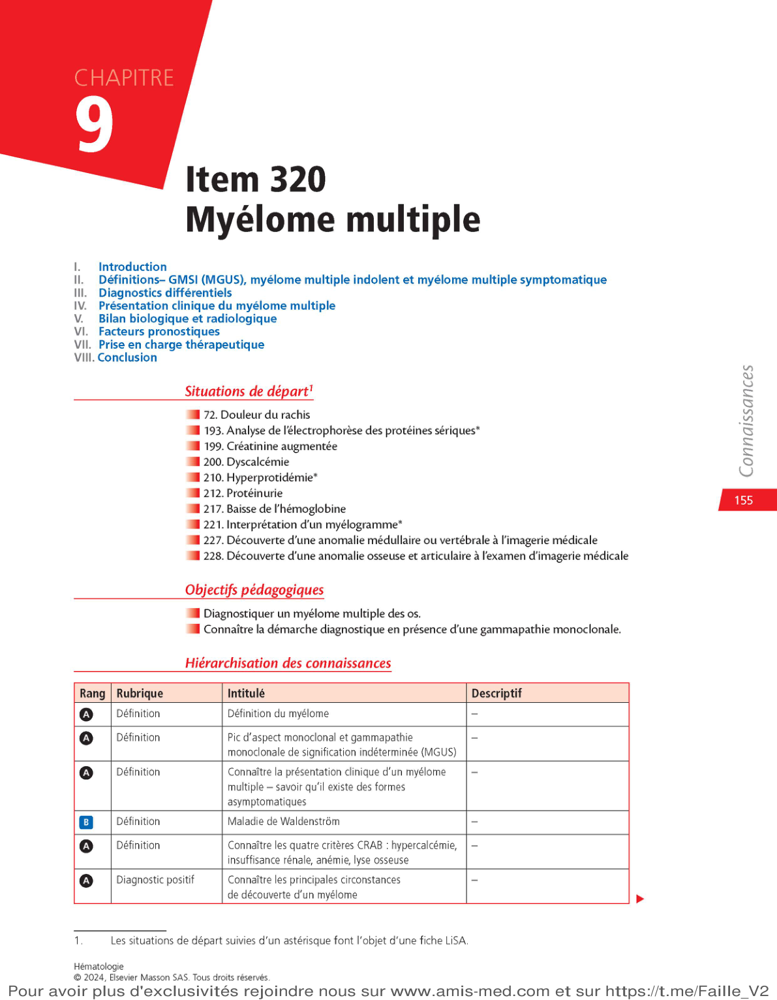

L'item 320 demande de savoir diagnostiquer un myélome multiple des os et connaître la démarche diagnostique devant une gammapathie monoclonale.
Q2
Que signifie l'acronyme CRAB dans le myélome multiple ?
👆 Appuyer pour révéler
C = Hypercalcémie · R = Insuffisance Rénale · A = Anémie · B = lésions osseuses (Bone)
Les 4 critères CRAB définissent le myélome symptomatique. Leur présence impose un traitement antitumoral.
Q3
Quel rang de connaissance a la définition du myélome et des critères CRAB ?
👆 Appuyer pour révéler
Rang A — connaissance indispensable
La définition, les critères CRAB, les circonstances de découverte et les examens de base sont rang A et doivent être maîtrisés.
Q4
Quelle situation de départ correspond à l'analyse de l'électrophorèse des protéines sériques ?
👆 Appuyer pour révéler
Situation de départ 193 (avec astérisque = fait l'objet d'une fiche LiSA)
La SD 193 (électrophorèse des protéines sériques) est une fiche LiSA prioritaire — à maîtriser en profondeur pour l'ECN.
Vignette clinique d'entrée — Item 320
🩺 Cas clinique
M. M., 72 ans, consulte aux urgences pour altération de l'état général. Depuis plusieurs semaines : douleurs osseuses inflammatoires au rachis et aux côtes. Depuis 24h : asthénie majeure, polydipsie et polyurie.
Examen clinique : FC = 105/min, signes de déshydratation, pas de déficit neurologique.
🧪 Résultats biologiques
Hb : 9,6 g/dL, VGM 98 fL, arégénérative
Créatininémie : 158 µmol/L (IR)
Calcémie : 3,8 mmol/L (hypercalcémie sévère)
Protidémie : 92 g/L (hyperprotidémie)
ECG : tachycardie sinusale
✅ Examens diagnostiques
EPS : pic IgG kappa = 34 g/L
Myélogramme : 32 % de plasmocytes
Scanner osseux : nombreuses lésions lytiques (rachis, côtes, bassin)
→ Myélome multiple symptomatique
CRAB : A (anémie) + R (IR) + B (lésions) + C (hypercalcémie)
⚠️ Urgences identifiées
Hypercalcémie sévère → hyperhydratation + bisphosphonates IV. IR aiguë → hydratation + éviction des néphrotoxiques (AINS, PC iodés). Hospitalisation en hématologie pour traitement antitumoral.
🃏 Quiz Flash – Vignette clinique
Appuyez sur chaque carte pour révéler la réponse
Q1
Dans la vignette, quels critères CRAB sont présents chez M. M. ?
👆 Appuyer pour révéler
Tous les 4 : C (calcémie 3,8 mmol/L), R (créatinine 158 µmol/L), A (Hb 9,6 g/dL), B (lésions lytiques)
Ce cas est un myélome symptomatique avec les 4 critères CRAB présents. Rare mais didactique.
Q2
Pourquoi les AINS sont-ils contre-indiqués dans le myélome multiple ?
👆 Appuyer pour révéler
Risque d'insuffisance rénale aiguë — aggravée par les AINS chez un patient déjà en IR et à risque de néphropathie à cylindres
Point ECN clé : AINS et produits de contraste iodés sont contre-indiqués dans le myélome. Pour la douleur : paliers 2-3, radiothérapie localisée.
Q3
Quel est le traitement d'urgence de l'hypercalcémie sévère dans le myélome ?
👆 Appuyer pour révéler
Hyperhydratation IV (sérum physiologique, 3 L/m²) + bisphosphonates IV (acide zolédronique) + traitement étiologique
L'hypercalcémie est une urgence vitale (troubles du rythme cardiaque). L'ECG est systématique. En cas d'IR sévère associée : discuter épuration extrarénale.
Q4
Que retrouve-t-on à l'électrophorèse des protéines sériques (EPS) en cas de myélome ?
👆 Appuyer pour révéler
Pic étroit (monoclonal) migrant en zone gamma (ou beta) + immunoparésie (baisse des autres immunoglobulines)
Le pic monoclonal est à bande étroite (contrairement aux pics polyclonaux inflammatoires). L'IF confirme le type (IgG, IgA...) et la chaîne légère (kappa ou lambda).
Définition
Le myélome multiple des os (anciennement maladie de Kahler) est une hémopathie maligne caractérisée par la prolifération multifocale de plasmocytes tumoraux au niveau de la moelle hématopoïétique. Le plasmocyte est la cellule différenciée du lymphocyte B, dont la fonction normale est la synthèse d'immunoglobulines.
📊 Épidémiologie clé
1 % de tous les cancers · 10 % des hémopathies malignes
~5 000 nouveaux cas/an en France
Âge médian au diagnostic : ~70 ans
Exposition aux pesticides = facteur de risque reconnu (maladie professionnelle possible)
Toujours précédé d'une phase asymptomatique (GMSI et/ou myélome indolent)
🔬 Physiopathologie
Le plasmocyte tumoral sécrète une immunoglobuline monoclonale (pic M) en excès
Les plasmocytes activent les ostéoclastes → lyse osseuse, hypercalcémie
Les chaînes légères libres → néphropathie tubulaire (cylindres myélomateux)
Immunoparésie → risque infectieux accru

Page 1 — Plan du cours Item 320, situations de départ
🃏 Quiz Flash – Introduction au myélome
Appuyez sur chaque carte pour révéler la réponse
Q1
Quelle est la cellule d'origine du myélome multiple ?
👆 Appuyer pour révéler
Le plasmocyte — cellule B différenciée, dont la fonction normale est la synthèse d'immunoglobulines
Le plasmocyte tumoral sécrète en excès une immunoglobuline monoclonale pathologique. Le myélome multiple = pathologie du lymphocyte B terminal.
Q2
Quel est l'âge médian de diagnostic du myélome multiple, et quel facteur de risque environnemental est reconnu ?
👆 Appuyer pour révéler
Âge médian ~70 ans — Facteur de risque : exposition prolongée aux pesticides (reconnaissance en maladie professionnelle possible)
Le myélome est essentiellement une maladie du sujet âgé. La recherche de comorbidités est déterminante pour le choix thérapeutique.
Q3
Par quel mécanisme le myélome entraîne-t-il une lyse osseuse et une hypercalcémie ?
👆 Appuyer pour révéler
Les plasmocytes tumoraux sécrètent des cytokines (IL-6, RANKL) qui activent les ostéoclastes → résorption osseuse → libération de calcium
Les lésions lytiques sont des lacunes osseuses "à l'emporte-pièce" sans ostéocondensation périphérique. La lyse osseuse est aussi responsable des fractures pathologiques.
Q4
Pourquoi le myélome entraîne-t-il un risque infectieux accru ?
👆 Appuyer pour révéler
Immunoparésie : les immunoglobulines normales sont diminuées (refoulées par le clone) → déficit en anticorps fonctionnels → infections à germes encapsulés
Les infections bactériennes (pneumocoque, méningocoque, Haemophilus) sont la 1ère cause de mortalité dans le myélome. La vaccination est indispensable.
Gammapathie monoclonale de signification indéterminée (GMSI / MGUS)
Définition GMSI (MGUS) — 3 critères cumulatifs
La GMSI est définie par la CONJONCTION des 3 éléments suivants :
Pic monoclonal sérique < 30 g/L
Plasmocytose médullaire < 10 %
Absence de symptômes CRAB attribuables au clone
📈 Épidémiologie de la GMSI
Prévalence > 5 % des sujets après 70 ans
Risque de progression vers hémopathie : ~1 % par an
Évolution possible vers : myélome (IgG, IgA, chaînes légères), Waldenström (IgM), amylose AL, lymphome B indolent
🔍 Prise en charge de la GMSI
Pas de traitement — surveillance clinique et biologique annuelle
Informer le patient du risque évolutif (faible mais réel)
Point clé ECN
La découverte d'une GMSI NE requiert PAS de traitement. Seule une surveillance est nécessaire. C'est une entité bénigne mais à surveiller car précurseur obligatoire du myélome.
Les 3 critères doivent être présents simultanément. Si l'un manque (pic > 30, plasmo > 10% ou CRAB présent), on sort de la GMSI.
Q2
Quel est le risque de progression d'une GMSI vers une hémopathie maligne ?
👆 Appuyer pour révéler
~1 % par an (risque faible mais cumulatif)
Après 10 ans, environ 10 % des GMSI ont évolué. La surveillance annuelle permet de détecter précocement la progression.
Q3
Une GMSI de type IgM évolue préférentiellement vers quelle hémopathie ?
👆 Appuyer pour révéler
Maladie de Waldenström (lymphome lymphoplasmocytaire à IgM)
Les GMSI IgG et IgA évoluent plutôt vers le myélome. Les GMSI IgM → Waldenström, lymphome B indolent, amylose AL à IgM.
Q4
Quel est le traitement d'une GMSI et la surveillance recommandée ?
👆 Appuyer pour révéler
Pas de traitement. Surveillance clinique et biologique annuelle (EPS, NFS, calcémie, créatinine, protéinurie)
La GMSI est une entité bénigne qui ne nécessite pas de traitement. La surveillance permet de détecter une progression avant l'apparition de complications.
Myélome indolent vs Myélome symptomatique — CRAB & SLiM
Myélome indolent (MI)
Patient asymptomatique (sans CRAB) avec : pic monoclonal > 30 g/L OU plasmocytose médullaire > 10 %.
Risque de progression vers le myélome symptomatique : 10 % par an. Surveillance seule si pas de critère SLiM.
🚨 Critères SLiM → traitement OBLIGATOIRE même sans CRAB
Sixty — plasmocytose médullaire ≥ 60 %
Light — ratio de chaînes légères libres sériques ≥ 100
MRI — ≥ 2 lésions focales à l'IRM
Entité
Pic M
Plasmo médullaire
CRAB
SLiM
Traitement
GMSI
<30 g/L
<10 %
Absent
Absent
Surveillance
Myélome indolent
>30 g/L ou
>10 %
Absent
Absent
Surveillance
Myélome symptomatique
Variable
>10 %
≥1 présent
et/ou ≥1
Traitement
🃏 Quiz Flash – CRAB et SLiM
Appuyez sur chaque carte pour révéler la réponse
Q1
Développez les 4 lettres de l'acronyme CRAB et donnez le critère chiffré pour R et A.
👆 Appuyer pour révéler
C = Hypercalcémie (>2,75 mmol/L ou +0,25 au-dessus de la normale) · R = Insuffisance Rénale (DFG <40 mL/min ou créatinine >177 µmol/L) · A = Anémie (Hb <10 g/dL) · B = lésions osseuses (Bone)
Les seuils de R et A sont à connaître. La présence d'au moins un critère CRAB définit le myélome symptomatique nécessitant un traitement.
Q2
Développez les critères SLiM et expliquez pourquoi ils déclenchent un traitement même sans CRAB.
👆 Appuyer pour révéler
S = plasmocytose ≥60 % · Li = ratio CLL ≥100 · M = ≥2 lésions IRM. Ces critères signalent un haut risque de progression imminente vers le myélome symptomatique.
Ces patients sont maintenant traités comme des myélomes symptomatiques, même sans CRAB, car le risque de complications à court terme est très élevé.
Q3
Quelle est la différence entre GMSI et myélome indolent ?
👆 Appuyer pour révéler
GMSI : pic <30 g/L ET plasmo <10 % · MI : pic >30 g/L OU plasmo >10 % — mais les deux sont ASYMPTOMATIQUES (sans CRAB)
La distinction porte sur les seuils biologiques. La gestion est identique (surveillance) tant qu'il n'y a pas de CRAB ni de SLiM.
Q4
À quelle fréquence surveille-t-on un myélome indolent sans critère SLiM ?
👆 Appuyer pour révéler
Tous les 3 à 6 mois (surveillance clinique + EPS + NFS + calcémie + créatinine)
Le rythme de surveillance du MI est plus rapproché que la GMSI (annuelle) car le risque de progression est plus élevé (~10%/an vs ~1%/an).
📝 QCM — Section I : Définitions
Q1Parmi les propositions, laquelle définit correctement une GMSI ?
La GMSI requiert les 3 critères : pic <30 g/L + plasmo <10% + absence de CRAB. Si l'un est absent, on sort de la définition.
Q2Quel critère SLiM impose à lui seul le traitement d'un myélome indolent ?
Les 3 critères SLiM sont : S = plasmo ≥60%, Li = ratio CLL ≥100, M = ≥2 lésions IRM. Une seule lésion IRM ne suffit pas.
Q3Quel est le seuil de créatinine définissant le critère R (Renal) des CRAB ?
Le critère R est défini par créatinine >177 µmol/L ou DFG <40 mL/min. Ce seuil est plus sévère que la simple réduction du DFG.
Q4À quelle fréquence surveille-t-on une GMSI sans facteur de risque ?
La GMSI se surveille annuellement. Le myélome indolent tous les 3-6 mois (risque de progression plus élevé).
Q5Quelle est la définition de l'anémie selon les critères CRAB ?
Le critère A est : Hb <10 g/dL OU chute >2 g/dL par rapport à la valeur habituelle. Même une anémie modérée mais significative compte.
Q6Un patient a un pic IgG = 25 g/L, une plasmocytose médullaire de 8 % et pas de signe CRAB. Quel est le diagnostic ?
Pic <30 g/L + plasmo <10% + absence de CRAB = GMSI. Surveillance annuelle, pas de traitement.
Q7Le myélome multiple est toujours précédé par :
Le myélome est toujours précédé d'une GMSI et/ou d'un myélome indolent, souvent non diagnostiqués car asymptomatiques.
Q8Quel est le risque de progression d'un myélome indolent vers le myélome symptomatique ?
MI → 10%/an de risque de progression (GMSI → 1%/an). C'est pourquoi le MI se surveille plus étroitement (3-6 mois vs annuel).
Q9Un patient a un ratio de chaînes légères libres sériques (kappa/lambda) à 120. Que faut-il conclure, si par ailleurs la plasmocytose est de 15 % et le pic est de 25 g/L ?
Ratio CLL ≥100 est un critère SLiM qui impose le traitement même sans CRAB. Ce patient a aussi une plasmocytose >10% = MI par définition, mais le SLiM impose le traitement.
Q10Quelle est la particularité du myélome à chaînes légères par rapport aux autres types ?
20% des myélomes ne synthétisent que des chaînes légères. L'EPS montre seulement une hypogammaglobulinémie. Le diagnostic repose sur les CLL sériques et l'immunofixation urinaire (protéinurie de Bence-Jones).
🏥 Dossier Progressif — Section I : Définitions
🩺 Cas clinique
Mme D., 65 ans, sans antécédent particulier, consulte son médecin généraliste pour un bilan systématique. L'EPS réalisée dans le cadre d'un bilan de santé montre un pic à bande étroite en zone gamma évalué à 18 g/L. L'immunofixation confirme une IgA kappa monoclonale. Le reste du bilan est normal : NFS normale, créatinine 78 µmol/L, calcémie normale. Le médecin décide de compléter le bilan.
Q1Quel est le diagnostic le plus probable chez Mme D. ?
Pic <30 g/L (18 g/L) + pas de signe CRAB + bilan normal = GMSI. Il faut encore confirmer la plasmocytose médullaire <10%.
Q2Quel examen est nécessaire pour compléter le bilan et confirmer le diagnostic ?
Le myélogramme permet de confirmer la plasmocytose <10% — critère indispensable à la définition de la GMSI.
Q3Le myélogramme montre 7 % de plasmocytes morphologiquement normaux. Quelle prise en charge proposer ?
GMSI confirmée (pic 18 g/L <30, plasmo 7% <10%, sans CRAB) → surveillance annuelle sans traitement. Risque de progression ~1%/an.
Q44 ans plus tard, le pic est à 32 g/L, la plasmocytose à 12 % et la patiente reste asymptomatique sans CRAB. Quel est le nouveau diagnostic ?
Pic >30 g/L ET plasmo >10% sans CRAB = myélome indolent. Surveillance renforcée (3-6 mois). Pas de traitement sauf critère SLiM.
Q51 an après, la patiente présente un ratio de chaînes légères libres sériques à 130 et une IRM montrant 3 lésions focales osseuses. Que faire ?
2 critères SLiM présents (Li=130≥100 et M=3 lésions ≥2) → traitement obligatoire, même sans CRAB. Ces patients ont un risque d'évolution à très court terme.
📋 Résumé — Section I : Définitions
🔑 À retenir absolument
GMSI : pic <30 g/L + plasmo <10% + sans CRAB → surveillance annuelle, pas de traitement
Myélome indolent : pic >30 g/L ou plasmo >10% + sans CRAB ni SLiM → surveillance 3-6 mois
Myélome à chaînes légères (20%) : EPS sans pic — diagnostic sur CLL sériques + immunofixation urinaire
Point ECN incontournable
GMSI et myélome indolent = PAS de traitement. Seul le myélome symptomatique (CRAB ou SLiM) est traité. Ne pas initier de traitement chez une GMSI est un point discriminant à l'examen.
Section II — Diagnostic différentiel
🔍
Distinguer le myélome de ses proches
Waldenström · Amylose AL · Plasmocytome · LLC
🎯 Objectifs
Distinguer myélome des autres gammapathies monoclonales
Identifier les critères spécifiques à chaque entité
Ne pas confondre avec GMSI ou MI
📚 Rang A — À connaître absolument
Waldenström : IgM uniquement
Amylose AL : dépôts d'immunoglobulines
LLC : lymphocytes B matures circulants
Macroglobulinémie de Waldenström
Définition (rang A)
Hémopathie lymphoplasmocytaire caractérisée par une infiltration médullaire lymphoplasmocytaire et la sécrétion d'une IgM monoclonale. Associée à une mutation MYD88 L265P dans >90% des cas.
⚠️ Piège fréquent
Un pic IgM ne signifie pas Waldenström : une GMSI peut aussi sécréter une IgM. Le diagnostic de Waldenström requiert l'infiltration médullaire et/ou les manifestations cliniques.
Différence clé MM vs Waldenström
MM = IgG/IgA/IgD/chaînes légères · lésions osseuses · plasmocytes médullaires >10%. Waldenström = IgM · lymphoplasmocytes · pas d'ostéolyse.
🃏 Quiz Flash — Waldenström
Appuyez sur chaque carte pour révéler la réponse
Q1
Quel type d'immunoglobuline est pathognomonique de la macroglobulinémie de Waldenström ?
👆 Appuyer pour révéler
IgM monoclonale
Seule l'IgM est sécrétée dans Waldenström. Un MM peut sécréter IgG, IgA, IgD mais jamais IgM.
Q2
Quelle mutation est retrouvée dans >90% des Waldenström ?
👆 Appuyer pour révéler
MYD88 L265P
Mutation du gène MYD88 (voie NF-kB). Très spécifique mais aussi retrouvée dans d'autres lymphomes B.
Q3
Quelle manifestation clinique est spécifique à Waldenström et absente du myélome ?
L'IgM est une grosse molécule pentamérique (900 kDa) qui augmente fortement la viscosité sanguine.
Q4
Peut-on avoir une GMSI à IgM ? Comment la différencier de Waldenström ?
👆 Appuyer pour révéler
Oui. GMSI-IgM = infiltration médullaire <10%, pas de manifestations cliniques
Waldenström nécessite une infiltration >10% et/ou des manifestations cliniques liées à l'IgM.
Amylose AL et autres gammapathies
Amylose AL (rang A)
Dépôt systémique de chaînes légères monoclonales mal repliées (amyloïdes). Peut compliquer un MM ou survenir isolément. Atteinte multi-organes : rein, cœur, foie, nerfs.
LLC/Leucémie lymphoïde : lymphocytes B CD5+ (≠ plasmocytes)
Métastases osseuses : lésions multiples, mais pas de pic monoclonal
Myélome non sécrétant : pas de pic, diagnostic difficile
🔎 Bilan d'amylose
Confirmation par biopsie (graisse abdominale, glandes salivaires, rectum) + coloration rouge Congo. L'amylose peut coexister avec un MM actif.
🃏 Quiz Flash — Diagnostics différentiels
Appuyez sur chaque carte pour révéler la réponse
Q1
Quel signe clinique est quasi pathognomonique de l'amylose AL ?
👆 Appuyer pour révéler
Macroglossie
L'hypertrophie de la langue par dépôts amyloïdes est très évocatrice. Aussi : periorbital purpura.
Le rouge Congo et la biréfringence sont les marqueurs histologiques de référence de l'amylose.
Q3
Quelle est la différence entre plasmocytome solitaire et myélome multiple ?
👆 Appuyer pour révéler
Plasmocytome solitaire = une seule lésion osseuse, plasmocytes médullaires normaux (<10%), pas de CRAB
Le MM est systémique. Le plasmocytome peut évoluer vers le MM dans 50% des cas à 10 ans.
Q4
Quel organe est typiquement atteint dans l'amylose cardiaque et quel en est le signe échocardiographique ?
👆 Appuyer pour révéler
Cœur → cardiomyopathie restrictive avec épaississement concentrique du septum (aspect « granité »)
L'amylose cardiaque est de mauvais pronostic. L'IRM cardiaque montre un rehaussement sous-endocardique caractéristique.
Section III — Manifestations cliniques
🩺
Quand le myélome se manifeste
CRAB · Symptômes au diagnostic · Urgences
⚡ Rappel : critères CRABCalcium >2,75 mmol/L · Renal (créatinine >177 µmol/L) · Anemia (Hb <10 g/dL) · Bone (lésions ostéolytiques). Ces critères déclenchent le traitement même sans symptômes.
Manifestations osseuses et hématologiques
Atteinte osseuse — 2/3 des patients au diagnostic (rang A)
Les plasmocytes tumoraux activent les ostéoclastes (via RANKL) et inhibent les ostéoblastes → lyse osseuse pure sans reconstruction. Résultat : douleurs osseuses (dos ++), fractures pathologiques, hypercalcémie.
🦴 Atteinte osseuse
Douleurs osseuses : dos (rachis), côtes, bassin — 70% des patients
Quel est le mécanisme principal d'insuffisance rénale dans le myélome ?
👆 Appuyer pour révéler
Cast nephropathy : précipitation de chaînes légères monoclonales dans les tubules rénaux → obstruction tubulaire → IRA
Les chaînes légères libres (kappa ou lambda) sont filtrées par le glomérule et précipitent en milieu acide dans les tubules distaux.
Q2
Pourquoi le myélome prédispose aux infections bactériennes répétées ?
👆 Appuyer pour révéler
Hypogammaglobulinémie résiduelle : les plasmocytes tumoraux inhibent la production d'immunoglobulines normales → déficit humoral profond
Germes capsulés (pneumocoque, Haemophilus) sont les plus redoutés. Vaccination pneumocoque recommandée.
Q3
Quelle prophylaxie antivirale est recommandée lors du traitement par bortézomib ?
👆 Appuyer pour révéler
Valaciclovir (prophylaxie zona VZV) — obligatoire pendant tout le traitement par bortézomib
Le bortézomib réactive fréquemment le VZV (zona). Sans prophylaxie, risque de zona sévère ou disséminé.
Q4
Quels médicaments anti-myélome causent une neuropathie périphérique ?
👆 Appuyer pour révéler
Bortézomib (IP) et thalidomide (IMiD) — neuropathie sensitive dose-dépendante
Le bortézomib SC cause moins de neuropathie que la voie IV. Le lénalidomide est mieux toléré que la thalidomide sur ce plan.
Section IV — Bilan diagnostique
🔬
Confirmer et stadifier le myélome
Biologie · Myélogramme · Imagerie osseuse
🎯 Triple objectif du bilan
1️⃣ Confirmer le diagnostic (myélogramme + EPS) · 2️⃣ Évaluer le retentissement (CRAB : rein, os, sang, calcium) · 3️⃣ Stadifier pour le pronostic (R-ISS : β2M, albumine, LDH, cytogénétique)
Bilan biologique — L'électrophorèse des protéines sériques
EPS + immunofixation — examens clés (rang A)
L'électrophorèse des protéines sériques (EPS) met en évidence un pic étroit (pic monoclonal) dans la zone des gammaglobulines. L'immunofixation caractérise le type d'immunoglobuline (IgG kappa, IgA lambda, etc.) et est indispensable au diagnostic.
Morphologie : plasmocytes atypiques, cellules en flammes
Caryotype médullaire + FISH : del(17p), t(4;14), t(14;16), +1q
BOM si myélogramme insuffisant ou fibrose
✅ Myélome non sécrétant (5%)
EPS normale + FLC normales + immunofixation négative mais plasmocytes >10% à la BOM. Surveillance par PET-scan.
🃏 Quiz Flash — Bilan biologique
Appuyez sur chaque carte pour révéler la réponse
Q1
Quel examen permet de caractériser le type d'immunoglobuline monoclonale (IgG, IgA, kappa, lambda) ?
👆 Appuyer pour révéler
L'immunofixation sérique (et urinaire pour la protéine de Bence-Jones)
L'EPS montre le pic mais ne le caractérise pas. L'immunofixation est indispensable pour typer l'immunoglobuline monoclonale.
Q2
Quel est le seuil de plasmocytes médullaires pour diagnostiquer un myélome multiple ?
👆 Appuyer pour révéler
≥10% de plasmocytes au myélogramme (critère IMWG)
GMSI : <10% + pic <30g/L. Myélome indolent : >10% mais sans CRAB/SLiM. Myélome actif : >10% + CRAB ou SLiM.
Q3
Qu'est-ce que la protéine de Bence-Jones ?
👆 Appuyer pour révéler
Chaînes légères libres monoclonales éliminées dans les urines (trop petites pour être retenues par le glomérule)
Détectée par immunofixation urinaire. La bandelette réactive est souvent négative (détecte l'albumine, pas les CLL). Bilan urinaire des 24h obligatoire.
Q4
Quelles anomalies cytogénétiques sont recherchées au myélogramme et ont une valeur pronostique ?
👆 Appuyer pour révéler
Del(17p) — t(4;14) — t(14;16) : anomalies de haut risque. +1q : intermédiaire. Hyperdiploïdie : bon pronostic
Ces anomalies sont intégrées dans le R-ISS. Del(17p) = perte de TP53 → pronostic très défavorable.
Imagerie osseuse — du scanner au PET-scan
Scanner corps entier — examen de référence (rang A)
Le scanner corps entier sans injection (low-dose) est l'examen de première intention pour évaluer l'atteinte osseuse dans le myélome. Il remplace les radiographies standard du squelette (moins sensibles).
Révised ISS (R-ISS) — rang A
Le R-ISS combine le score ISS (β2-microglobuline + albumine), les LDH et la cytogénétique à haut risque pour stratifier le pronostic du myélome multiple.
R-ISS = Revised ISS. L'ISS original ne comportait que β2M et albumine. Le R-ISS ajoute LDH et cytogénétique.
Q2
Quelle anomalie cytogénétique est de plus mauvais pronostic dans le myélome ?
👆 Appuyer pour révéler
Del(17p) — perte du gène suppresseur de tumeur TP53
La del(17p) est associée à la résistance aux traitements et une évolution rapide. Elle définit un myélome de haut risque cytogénétique.
Q3
Quelle est la survie globale à 5 ans pour un R-ISS stade I vs stade III ?
👆 Appuyer pour révéler
Stade I : ~82% · Stade III : ~40%
Différence importante : le R-ISS permet d'adapter l'intensité du traitement (intensification vs approche moins agressive).
Q4
Pourquoi la β2-microglobuline est-elle un marqueur pronostique dans le myélome ?
👆 Appuyer pour révéler
Reflète la masse tumorale ET la fonction rénale (son élimination est rénale). Corrélée au nombre de plasmocytes tumoraux.
Normale <2 mg/L. Élevée dans le MM du fait de la charge tumorale. Aussi élevée en cas d'IRC indépendamment du MM.
Section VI — Traitement du myélome multiple
💊
Traitement spécifique et symptomatique
IP · IMiD · Anti-CD38 · Autogreffe · CAR-T
⚡ Principe : traitement en fonction de l'éligibilité à l'autogreffe
La greffe autologue de cellules souches hématopoïétiques (autogreffe) est le gold standard <70 ans sans comorbidité. Au-delà ou si contre-indication : traitement continu sans intensification.
Classes thérapeutiques principales
🔵 Inhibiteurs du protéasome (IP)
Bortézomib (Velcade®) : 1ère génération, SC ou IV, neurotoxicité
Quel est le mécanisme d'action des inhibiteurs du protéasome (ex. bortézomib) ?
👆 Appuyer pour révéler
Inhibition du protéasome 26S → accumulation de protéines ubiquitinées mal repliées → stress du réticulum endoplasmique → apoptose des plasmocytes sécréteurs
Les plasmocytes sont particulièrement sensibles car ils produisent d'énormes quantités d'immunoglobulines → très dépendants du protéasome pour l'élimination des protéines.
Q2
Pourquoi la thalidomide est-elle très encadrée ? Quel programme s'applique ?
👆 Appuyer pour révéler
Tératogène majeur (phocomélie). Programme de prévention de grossesse obligatoire (contraception + test grossesse mensuel)
La thalidomide est remise uniquement dans le cadre du programme THALIDOMIDE CELGENE avec contraception assurée et test de grossesse négatif.
Q3
Sur quel antigène cible le daratumumab ? Pourquoi cela fonctionne-t-il dans le myélome ?
👆 Appuyer pour révéler
Anti-CD38 — CD38 est fortement et uniformément exprimé sur les plasmocytes tumoraux → cytotoxicité sélective
Le daratumumab est maintenant en 1ère ligne (triplette VRd-Dara). Il peut fausser le groupage sanguin (interférence avec la phénotypage RBC).
Q4
Qu'est-ce qu'un CAR-T anti-BCMA ? Dans quel contexte est-il utilisé ?
👆 Appuyer pour révéler
Lymphocytes T du patient génétiquement modifiés pour exprimer un récepteur chimérique (CAR) ciblant BCMA (B-Cell Maturation Antigen). Utilisé en rechute/réfractaire après au moins 3 lignes de traitement.
BCMA est exprimé sur les plasmocytes matures. Taux de réponse ~70-80% en rechute réfractaire (Abecma®, Carvykti®).
⚠️ Thromboprophylaxie obligatoire sous IMiD
Lénalidomide et thalidomide → risque thromboembolique veineux majeur. HBPM ou aspirine obligatoires selon le score de risque thrombotique du patient.
🃏 Quiz Flash — Stratégie thérapeutique
Appuyez sur chaque carte pour révéler la réponse
Q1
Quel est le conditionnement standard pour l'autogreffe dans le myélome ?
👆 Appuyer pour révéler
Melphalan haute dose (HDM200 : 200 mg/m²)
Le melphalan haute dose est myéloablatif (destruction complète de la moelle). La réinjection des CSH autologues permet la reconstitution hématopoïétique en J10-14.
Q2
Quelle est la triplette d'induction de référence chez le patient éligible à l'autogreffe ?
Immunoglobulines IV si hypogammaglobulinémie symptomatique
✅ Bilan dentaire avant bisphosphonates
Obligatoire avant tout bisphosphonate ou dénosumab pour prévenir l'ostéonécrose de mâchoire. Soins dentaires préventifs requis.
🃏 Quiz Flash — Traitement symptomatique
Appuyez sur chaque carte pour révéler la réponse
Q1
Quel traitement osseux est prescrit systématiquement dans le myélome actif et pourquoi ?
👆 Appuyer pour révéler
Bisphosphonates IV (zolédronate mensuel) — inhibent les ostéoclastes → réduisent les événements osseux (fractures, hypercalcémie)
Le zolédronate réduit de ~40% les événements osseux. Alternative : dénosumab si ClCr <30 mL/min.
Q2
Quelle précaution dentaire est obligatoire avant bisphosphonates ? Pourquoi ?
👆 Appuyer pour révéler
Bilan dentaire + soins préventifs — prévention de l'ostéonécrose de mâchoire (ONM : nécrose osseuse avascularire de la mâchoire)
L'ONM est une complication rare mais grave des bisphosphonates/dénosumab. Risque augmenté par chirurgie dentaire post-traitement.
Q3
Quels médicaments néphrotoxiques sont absolument contre-indiqués dans le myélome ?
👆 Appuyer pour révéler
AINS (↑ IRA fonctionnelle) + produits de contraste iodés (↑ précipitation CLL) + aminosides (néphrotoxicité) + IEC/ARA2 (↑ risque IRA)
Le rein du myélome est déjà fragilisé par les chaînes légères libres. Tout facteur aggravant doit être évité.
Q4
Quel est le traitement en urgence de l'hypercalcémie sévère dans le myélome ?
👆 Appuyer pour révéler
1) Hyperhydratation IV NaCl 0,9% (3-4L/j) + 2) Zolédronate IV 4 mg (effet en 48-72h) + 3) Corticoïdes + 4) Traitement du myélome dès que possible
L'hypercalcémie >3,5 mmol/L est une urgence vitale (troubles du rythme, insuffisance rénale, coma). La réhydratation est le geste prioritaire.
🎯 Examen — QCM Sections II–VI
10 questions — cochez la (ou les) bonne(s) réponse(s) puis validez
Q1. Parmi les propositions suivantes, laquelle est vraie concernant la macroglobulinémie de Waldenström ?
A. Elle peut se présenter avec un pic IgG
B. Elle est associée à une mutation MYD88 dans >90% des cas
C. Elle peut causer un syndrome d'hyperviscosité
D. Elle entraîne des lésions ostéolytiques caractéristiques
E. Le diagnostic requiert une plasmocytose médullaire >30%
B. Le diagnostic repose sur la biopsie et le rouge Congo
C. Elle ne peut pas coexister avec un myélome actif
D. L'atteinte cardiaque est de mauvais pronostic
E. Elle est causée par des dépôts d'IgG entières
Q3. La scintigraphie osseuse est souvent négative dans le myélome car :
A. Le traceur ne passe pas la barrière osseuse dans le myélome
B. Il n'y a pas de reconstruction osseuse (lyse pure sans ostéoblastes)
C. Le myélome détruit le traceur radioactif
D. L'os myélomateux est trop dense pour fixer le traceur
E. La scintigraphie est contre-indiquée dans le myélome
🎯 Examen — QCM Sections II–VI (suite)
Questions 4 à 7
Q4. Le score R-ISS associe :
A. β2-microglobuline et albumine
B. LDH
C. Cytogénétique à haut risque [del(17p), t(4;14), t(14;16)]
D. Protéinurie des 24 heures
E. Score OMS/ECOG
Q5. Concernant le traitement du myélome, quelle(s) affirmation(s) est(sont) correcte(s) ?
A. L'autogreffe est proposée aux patients <70 ans sans comorbidité majeure
B. La scintigraphie osseuse guide la décision thérapeutique
C. Une thromboprophylaxie est obligatoire sous lénalidomide
D. Le conditionnement standard de l'autogreffe est le melphalan 200 mg/m²
E. Le daratumumab cible le CD20
Q6. Quelle(s) urgence(s) peut-on rencontrer dans le myélome multiple ?
A. Compression médullaire
B. Hypercalcémie sévère
C. Insuffisance rénale aiguë
D. Occlusion intestinale aiguë
E. Syndrome infectieux sévère (sepsis)
Q7. Quelle affirmation sur les bisphosphonates dans le myélome est FAUSSE ?
A. Ils réduisent les fractures pathologiques
B. Un bilan dentaire préalable est obligatoire
C. L'ostéonécrose de mâchoire est une complication redoutée
D. Ils stimulent la reconstruction osseuse (activité ostéoblastique)
E. Le dénosumab est une alternative si IRC sévère
🎯 Examen — QCM Sections II–VI (fin)
Questions 8 à 10
Q8. L'immunofixation sérique est indispensable dans le bilan du myélome car :
A. Elle mesure le taux d'immunoglobulines totales
B. Elle caractérise le type d'immunoglobuline monoclonale (IgG, IgA, kappa, lambda)
C. Elle détecte la protéine de Bence-Jones urinaire
D. Elle mesure la β2-microglobuline
E. Elle quantifie le pic monoclonal
Q9. La prophylaxie valaciclovir est obligatoire sous quel traitement du myélome ?
A. Bortézomib
B. Lénalidomide seul
C. Daratumumab seul
D. Zolédronate
E. Aucun de ces traitements
Q10. Un patient de 75 ans avec myélome actif et IRC (ClCr=25 ml/min) : quel traitement osseux choisir ?
A. Zolédronate IV standard
B. Dénosumab SC
C. Pamidronate IV
D. Aucun traitement osseux (contre-indiqué)
E. Scintigraphie osseuse pour guider la décision
📂 Dossier Progressif — Monsieur R., 68 ans
Vignette clinique
M. R., 68 ans, sans antécédent, est adressé par son médecin traitant pour fatigue progressive depuis 4 mois, douleurs dorsales récentes et bilan sanguin perturbé. À l'examen : pâleur cutanéo-muqueuse, douleur à la palpation du rachis dorso-lombaire, pas d'adénopathie ni splénomégalie.
❓ Interprétez ce bilan et proposez les examens complémentaires de première intention
Correction étape 1
Syndrome CRAB complet : A (Hb 8,2 <10) + R (créat 198 >177) + C (Ca 3,1 >2,75). Protidémie élevée → suspicion de pic monoclonal. VS très élevée → inflammation ou gammapathie. Examens urgents : EPS + immunofixation, FLC sériques, protéinurie 24h, myélogramme, scanner corps entier low-dose.